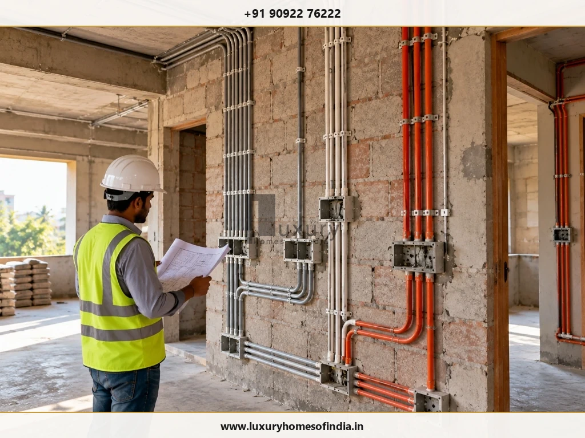
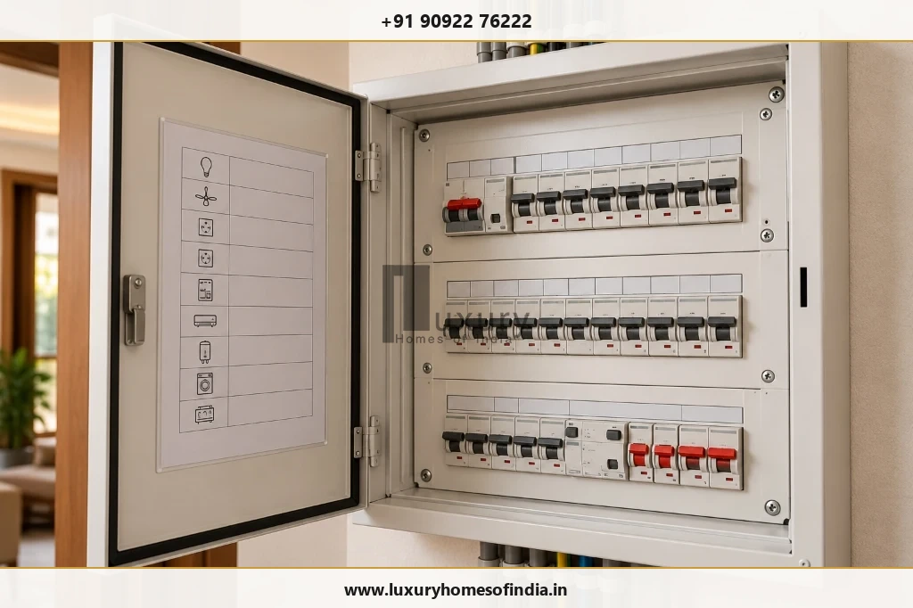
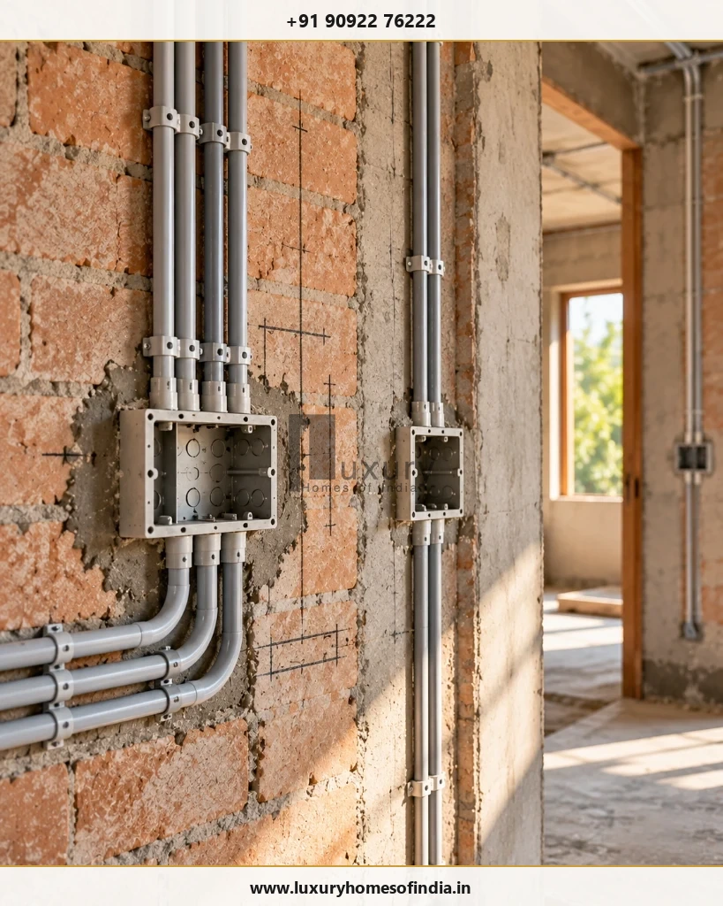
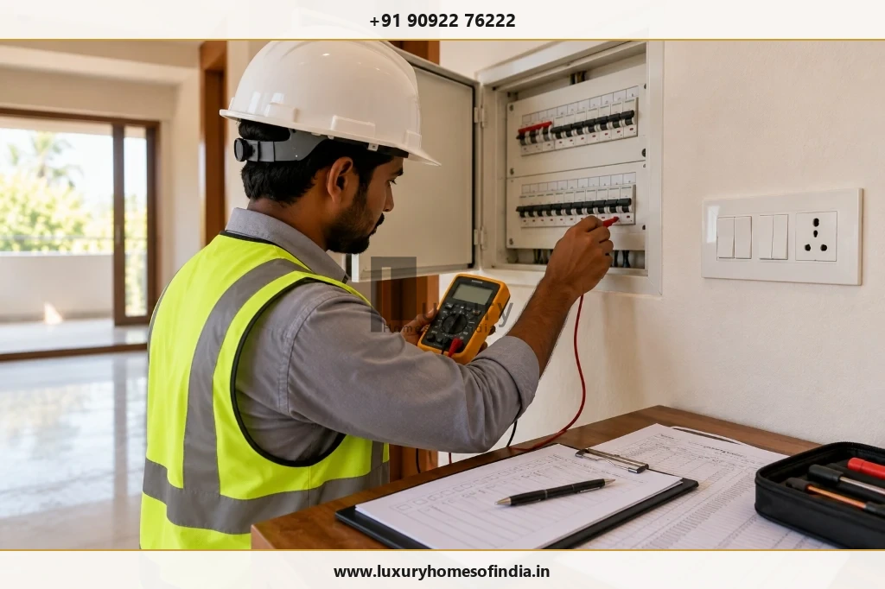

Executive Summary: Best Electrical Wiring for Indian Homes
Choosing the best electrical wiring for a new house means planning a cohesive, safe electrical system—not simply purchasing a popular wire brand off the shelf. For modern residential construction across India, high-conductivity, electrolytic-grade (99.97% pure) multi-strand copper cables housed within rigid heavy-duty PVC conduits represent the industry benchmark for durability and safety.
A safe home installation requires matching conductor cross-sections to calculated loads, specifying Flame Retardant Low Smoke (FRLS) or Zero Halogen (LSZH) insulation conforming to IS 694, separating high-load appliance circuits, installing dual-level MCB and RCCB protective switchgear, constructing chemical pipe earthing meeting IS 3043:2018, and conducting pre-occupancy insulation resistance testing.

1. Which Electrical Wire Is Best for a New House?
When homeowners embark on house construction, they frequently ask: "Which brand of wire should I buy?" While reputable manufacturing quality is essential, an electrical wire's performance depends fundamentally on its metallurgical composition, insulation compound, current-carrying capacity (ampacity), and compliance with the Bureau of Indian Standards (BIS).
Copper versus Aluminium Conductors
For internal residential concealed wiring, annealed electrolytic-grade copper (99.97% purity) is the undisputed standard. Copper possesses nearly double the electrical conductivity of aluminium, significantly lower electrical resistance, superior tensile strength, and exceptional flexibility for pulling through bends in conduits. Most importantly, copper does not suffer from rapid galvanic oxidation or the high thermal creep ("cold flow") that causes aluminium wire connections to loosen over time, generate resistive arcing, and trigger electrical fires.
Aluminium conductors are restricted primarily to heavy incoming service cables from the electricity board pole to the main kilowatt-hour (kWh) meter box or sub-main underground feeds where large cross-sections (16 sq. mm to 50 sq. mm) offer cost savings and are terminated using bimetallic compression lugs. Internal branch circuits should exclusively utilize multi-strand copper cables.
Understanding Insulation Types: PVC, FR, FRLS and LSZH
The protective insulation wrapping the copper conductor dictates how the wire behaves under elevated operating temperatures and in the event of an electrical short circuit or structural fire:
| Insulation Class | Technical Formulation | Fire & Smoke Performance | Recommended Residential Use |
|---|---|---|---|
| Standard PVC | Basic Polyvinyl Chloride insulation compound. | High smoke emission; releases toxic hydrogen chloride gas when burning. | Outdated. Not recommended for modern concealed residential wiring. |
| FR (Flame Retardant) | Special PVC compound with high Oxygen Index (≥ 29%) and Temperature Index (≥ 250°C). | Self-extinguishes once external flame source is removed; retards flame spread. | Acceptable for general low-occupancy spaces and basic utility circuits. |
| FRLS (Flame Retardant Low Smoke) | Advanced PVC with flame retardants and smoke-suppressing mineral additives. | Self-extinguishing; emits less than 60% smoke density and reduces toxic acid gas release. | Recommended Standard for modern homes, multi-story residences, and concealed conduits. |
| LSZH / HFFR (Low Smoke Zero Halogen) | Cross-linked polyolefin thermoplastic polymers containing zero halogens (chlorine, fluorine, bromine). | Virtually zero toxic acid emissions, ultra-low transparent smoke; preserves visibility and life safety. | Premium Specification for luxury villas, basements, home theatres, and enclosed air-conditioned spaces. |
Statutory Standard: BIS IS 694
All residential single-core and multi-core flexible cables must bear the authentic ISI mark confirming compliance with IS 694 (PVC insulated cables for working voltages up to and including 1100 V). Always demand manufacturer test certificates verifying conductor resistance, insulation thickness, spark test voltage (6 kV), and oxygen index before cables are unspooled on site.
2. How Do You Choose the Correct Wire Size?
Selecting conductor cross-sections cannot be based on guesswork or arbitrary electrician habits. Under-sizing conductors causes internal $I^2R$ resistive heating, voltage drop, degraded appliance performance, and dangerous insulation breakdown. Conversely, over-sizing conductors inflates copper costs, causes conduit overcrowding, and makes terminal connections inside modular switch boxes difficult to seat cleanly.
A licensed electrical engineer calculates conductor gauge based on continuous running current, starting surge currents, circuit run length, ambient de-rating (crucial in hot Indian climates), and grouping de-rating factors when multiple circuits share a common conduit.

| Circuit Category | Recommended Wire Gauge | Nominal Current Capacity | Typical Protective MCB |
|---|---|---|---|
| Lighting & Ceiling Fans | 1.5 sq. mm Copper | Up to 13–15 Amperes | 6A or 10A (Type B / C) |
| General Utility Sockets (6A/16A) | 2.5 sq. mm Copper | Up to 18–21 Amperes | 16A (Type C) |
| Air Conditioners (1.0 to 1.5 Ton) | 2.5 to 4.0 sq. mm Copper | Up to 26 Amperes | 16A or 20A (Type C) |
| Air Conditioners (2.0 Ton / VRV) | 4.0 to 6.0 sq. mm Copper | Up to 34 Amperes | 25A or 32A (Type C) |
| Water Heaters / Geysers (15–25L) | 2.5 to 4.0 sq. mm Copper | Up to 21–26 Amperes | 16A or 20A (Type C) |
| Kitchen Microwave & Induction | 4.0 sq. mm Copper | Up to 26 Amperes | 20A or 25A (Type C) |
| Water Sump / Pressure Pumps | 2.5 to 4.0 sq. mm Copper | Up to 21–26 Amperes | 16A Motor-rated (Type C) |
| EV Charger (7.4 kW Level 2) | 6.0 to 10.0 sq. mm Copper | Up to 40–50 Amperes | 32A or 40A (Type C) + Type B RCD |
| Floor Sub-Distribution Feeders | 6.0 to 10.0 sq. mm Copper | Up to 45–60 Amperes | 40A or 63A Four-Pole MCB / Isolator |
3. Why Should High-Load Appliances Have Properly Planned Circuits?
One of the most dangerous shortcuts in residential wiring is "looping" or daisy-chaining multiple heavy appliances onto a single circuit. When an air conditioner, a 2000-watt electric geyser, and a washing machine share the same phase and neutral wires, simultaneous operation pushes total current well beyond the safe thermal rating of the conductors.
Dedicated, unbroken home-run circuits originating directly from the Distribution Board (DB) are mandatory for:
- Every Split AC Unit: Prevents compressor inductive start-up surges from causing light flicker or tripping sensitive electronics in adjoining rooms.
- Bathroom Storage Water Heaters: Ensures that high-wattage immersion heating elements operate with isolated neutral conductors and dedicated 30 mA earth-leakage protection.
- Kitchen Cooking Equipment: Modern modular kitchens concentrate high-draw appliances (induction hobs, built-in ovens, dishwashers, and chimney exhausts). Each high-wattage appliance requires an independent circuit to maintain diversity without nuisance tripping.
- Electric Vehicle (EV) Chargers: EV charging represents a continuous, multi-hour maximum load that standard residential socket loops cannot safely support. A dedicated 32A/40A line with industrial-grade interlocked sockets or a dedicated wallbox is essential.
4. MCB, RCCB and RCBO: What Is the Difference?
The residential Distribution Board (DB) is the central command and safety hub of your home's electrical network. High-quality copper wire is only as safe as the protective switchgear calibrated to protect it. Understanding the distinct roles of modern circuit breakers is vital:

Comparative Switchgear Guide
- MCB (Miniature Circuit Breaker): Protects wiring against thermal overloads and instantaneous magnetic short circuits. MCBs trip when total current exceeds rated capacity (e.g. 10A, 16A, 32A). Crucial Note: MCBs do NOT protect human beings from electric shock!
- RCCB (Residual Current Circuit Breaker): Continuously monitors current balance between live (phase) and neutral. If current leaks to earth (e.g. through a frayed wire or a human touching a live chassis), the RCCB disconnects power within 30 milliseconds. Standard residential sensitivity must be 30 mA for life protection.
- RCBO (Residual Current Breaker with Overcurrent): Combines the functions of an MCB and an RCCB into a single compact DIN-rail module. In premium homes, using individual RCBOs on critical circuits (kitchen, bathrooms, home office) prevents an earth leak in one room from plunging the entire house into darkness.
- SPD (Surge Protection Device): Protects sensitive microprocessors in smart home automation systems, LED drivers, inverter ACs, and home theatre equipment from lightning-induced voltage spikes and grid transients. Install a Type 2 SPD at the main intake DB.
5. Why Is Earthing Essential in House Wiring?
Protective earthing is the ultimate life-saving safeguard of any electrical installation. Earthing provides a low-impedance electrical path connecting all non-current-carrying metallic parts of appliances (refrigerators, geysers, washing machines, metal switch plates) directly to the general mass of earth.
Without an effective earth connection, if an internal insulation failure occurs inside a metallic water heater, the entire metal casing and hot water pipeline become live at 230V. The moment a person touches the tap, current flows through their body to ground, causing severe injury or electrocution. With proper earthing in place, fault current rushes harmlessly into the ground, instantly triggering the RCCB to cut the circuit in milliseconds.
IS 3043:2018 Earthing Standards for Indian Homes
- Maintenance-Free Chemical Pipe Earthing: Replace obsolete charcoal-and-salt pits with copper-bonded steel electrodes (minimum 250-micron copper coating, 14–17 mm diameter, 3 meters length) encased in highly conductive bentonite carbon backfill compound.
- Target Earth Resistance: Total earth loop resistance must measure less than 2.0 to 5.0 Ohms throughout the year, even during peak dry summer months.
- Dedicated Separate Earth Pits: A luxury home should feature at least two interconnected earth pits for the electrical installation, plus a separate dedicated, isolated pit for lightning arrester arrestor down-conductors and high-end IT/audio racks.
- Continuous Green/Yellow CPC: The Circuit Protective Conductor (earth wire) must be continuous back to the main earth terminal. Never use building reinforcement steel bars (rebar) as an earth return!
6. Concealed Conduit Wiring versus Surface Wiring
In modern Indian residential construction, wiring methodology dictates both aesthetic luxury and long-term serviceability.
Concealed Conduit Wiring
Concealed wiring involves cutting vertical and horizontal chases into brick or block walls, laying heavy-duty rigid PVC conduits (conforming to IS 9537 Part 3), fastening them with metal saddles, and embedding them behind cement plaster before wall painting. Conduit runs within ceiling slabs are installed directly on shuttering sheets before RCC concrete pouring.

Concealed Conduit Best Practices
- Conduit Conduit Fill Capacity (40% Rule): Never pack conduits full of wire. Total cable cross-sectional area should never exceed 40% of the conduit's internal area to prevent heat build-up and allow easy wire replacement.
- Avoid Diagonal Wall Chasing: Conduits must run strictly vertically or horizontally. Diagonal chases weaken structural brickwork and create unseen hazards when hanging pictures or cabinetry later.
- Inspection Junction Boxes: Install accessible circular inspection pull boxes at every 9 to 10 meters of straight run or after every two 90° bends to prevent cable snagging during wire pulling.
- Separate High-Voltage and Low-Voltage Conduits: Never run 230V power wires and low-voltage Category-6 LAN, TV coaxial, or audio speaker cables in the same conduit. Maintain at least 300 mm physical separation to prevent electromagnetic interference (EMI) and hum.
7. Electrical Planning Room by Room
Effective electrical design anticipates your family's daily living patterns, furniture placement, and appliance usage room by room:
- Living & Dining Lounges: Provide two-way switching for primary cove and accent lighting. Integrate concealed HDMI/optical conduits for wall-mounted displays, floor pop-up power boxes beneath floating sofas, and dedicated 6A/16A sockets for robotic vacuum docking stations and air purifiers.
- Master & Guest Bedrooms: Align bedside modular plates (USB-C fast-charging ports, master light switches, fan speed regulators) with exact headboard dimensions. Place wardrobe interior lighting on magnetic door sensors. Provide dedicated 16A AC points at 2.1 m height.
- Modern Modular Kitchen: High-density power hub. Provide separate 16A/20A sockets for microwave, built-in oven, refrigerator, dishwasher, and water purifier. Install under-cabinet task LED strips and ceiling chimney power outlets at exact equipment heights.
- Bathrooms & Powder Rooms: Adhere strictly to electrical bathroom zones. No open sockets within 600 mm of shower areas. Provide IP44/IP55 moisture-resistant switch plates, dedicated 20A geyser points placed high outside shower spray zones, and shaver/hairdryer sockets adjacent to mirrors.
- Terraces, Balconies & Landscape: Specify heavy-duty weatherproof enclosures (minimum IP65 rating) with silicone gaskets for all outdoor garden lights, facade accent up-lighters, and terrace water pump supplies.
- Home Office & Server Racks: Provide raw power sockets alongside dedicated clean inverter/UPS backup sockets. Install Cat-6A or Cat-7 Ethernet drops terminating at a central structured cabling patch panel for whole-home high-speed Wi-Fi 6/7 access points.
8. Electrical Planning Considerations for Chennai Homes
Chennai's coastal tropical climate poses unique environmental challenges for residential electrical infrastructure that standard inland specifications overlook:
- Extreme Ambient Temperature De-Rating: Summer ambient temperatures frequently reach 40°C to 44°C, with ceiling slab temperatures climbing even higher. Standard cable ampacity tables are rated at 30°C. Conductor cross-sections must be de-rated by 15% to 20% to prevent continuous thermal stress on AC feeder lines.
- High Humidity & Coastal Salt Air Corrosion: In coastal neighbourhoods (such as ECR, OMR, Besant Nagar, and Thiruvanmiyur), airborne marine salt mist accelerates copper terminal corrosion and switchgear contact oxidation. Specify switchgear with silver-nickel contacts, tin-plated copper busbars, and anti-corrosive powder-coated distribution cabinets.
- Monsoon Ingress Protection: Heavy Northeast Monsoon downpours demand robust sealing of external meter panels, terrace junction boxes, and garden bollard lighting with IP66-rated enclosures to eliminate moisture short circuits.
- Rooftop Solar & Battery Inverter Integration: Provision bidirectional net-metering conduit lines running from the main ground-floor panel to the terrace, along with dedicated isolator switches and DC surge protection.
- EV Charging Ready: Plan a dedicated three-phase 32A power supply to the car porch during foundation works to enable seamless Level 2 (7.4 kW to 11 kW) home EV charging without breaking finished floors.
9. How Much Does Electrical Wiring Cost for a New House?
Residential electrical costs vary depending on building footprint, number of electrical points, switchgear specifications, and home automation provisions. In Chennai and across India, complete electrical works generally range from ₹180 to ₹350 per sq. ft. of built-up area for premium residential specifications (excluding decorative light fixtures).
A transparent, itemised electrical contract should encompass:
- Conduit & Wall Chasing Work: Heavy-duty rigid PVC conduits, metal junction boxes, floor chase cutting, and structural plaster patching.
- Cable Supply & Pulling: Certified IS 694 FRLS/LSZH copper conductors color-coded across Phase (Red/Yellow/Blue), Neutral (Black), and Earth (Green/Yellow).
- Distribution Boards & Switchgear: Double-door metallic DB enclosures, main 4-pole isolator, 30 mA RCCBs, Type C MCBs, and Surge Protection Devices.
- Modular Switches & Plates: Flame-retardant polycarbonate or glass finish modular switch plates, child-safety shuttered sockets, and USB charging modules.
- Earthing Infrastructure: Maintenance-free copper-bonded chemical earth electrodes, bentonite compound, and heavy-duty inspection chambers.
- Testing & Statutory Commissioning: Megger insulation resistance verification, continuity testing, and TANGEDCO/CEIG inspection coordination.
10. Common Electrical Wiring Mistakes to Avoid
- Selecting Wires by Brand Name Alone: Failing to verify authentic ISI certification, batch test certificates, conductor purity, and insulation classification (FR vs FRLS).
- Using Generic Electrician Rule-of-Thumb Sizes: Assigning 1.5 sq. mm wire for all power sockets or daisy-chaining air conditioners onto lighting circuits.
- Omitting 30 mA RCCB Earth-Leakage Protection: Relying strictly on standard MCBs, leaving occupants completely vulnerable to lethal electric shocks and electrical arcing fires.
- Sharing Neutral Conductors Across Separate Circuits: Running a single neutral wire for multiple phase circuits causes severe neutral conductor overheating and erratic RCCB tripping.
- Overcrowding Conduits Beyond the 40% Capacity Limit: Forcing too many wires into narrow conduits restricts heat dissipation, damages cable insulation during pulling, and prevents future rewiring.
- Undocumented Concealed Conduit Routes: Failing to take photographic records and prepare as-built drawings before plastering, leading to punctured cables when drilling for paintings or shelves.
- Running High-Voltage Power with Data / TV Cables: Bundling 230V power wires with LAN or coaxial cables introduces electromagnetic hum, network packet loss, and safety hazards.
- Unlabelled Distribution Board Circuits: Leaving identical breaker rows without a clear circuit directory, turning emergency troubleshooting into dangerous guesswork.
- Substandard or Neglected Earthing: Using uncertified GI pipes in corrosive saline soils, resulting in earth loop resistance exceeding safe statutory limits.
- Moving In Before Insulation Resistance Testing: Energizing the house without completing formal Megger insulation resistance and polarity checks.
11. Electrical Wiring Checklist Before Handover
Never accept electrical handover or energize your new residence based solely on whether the light bulbs turn on. Thorough pre-commissioning testing with calibrated scientific instruments is mandatory:

Frequently Asked Questions
Plan Safe, Future-Ready Electrical Infrastructure with Luxury Homes of India
Modern luxury living depends on an uncompromising electrical backbone. Connect with our MEP (Mechanical, Electrical, and Plumbing) engineering team to engineer comprehensive load schedules, FRLS conduit layouts, and smart automation provisions for your home.